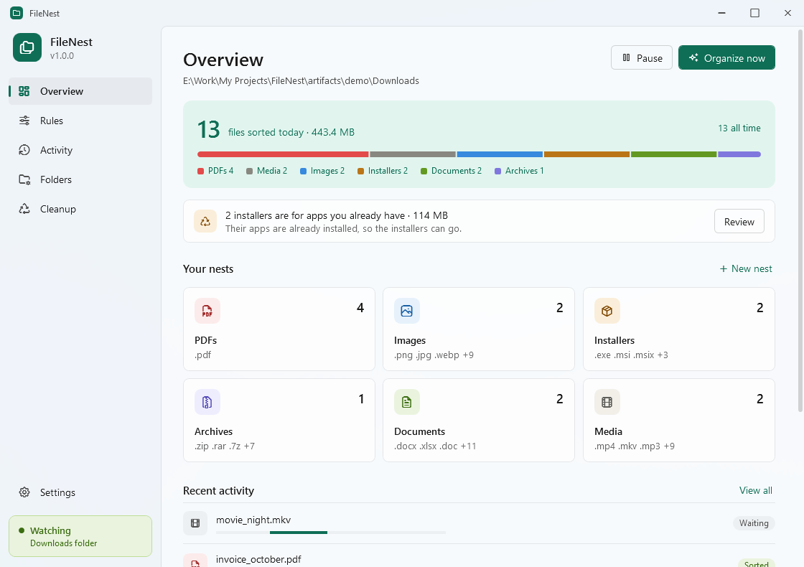
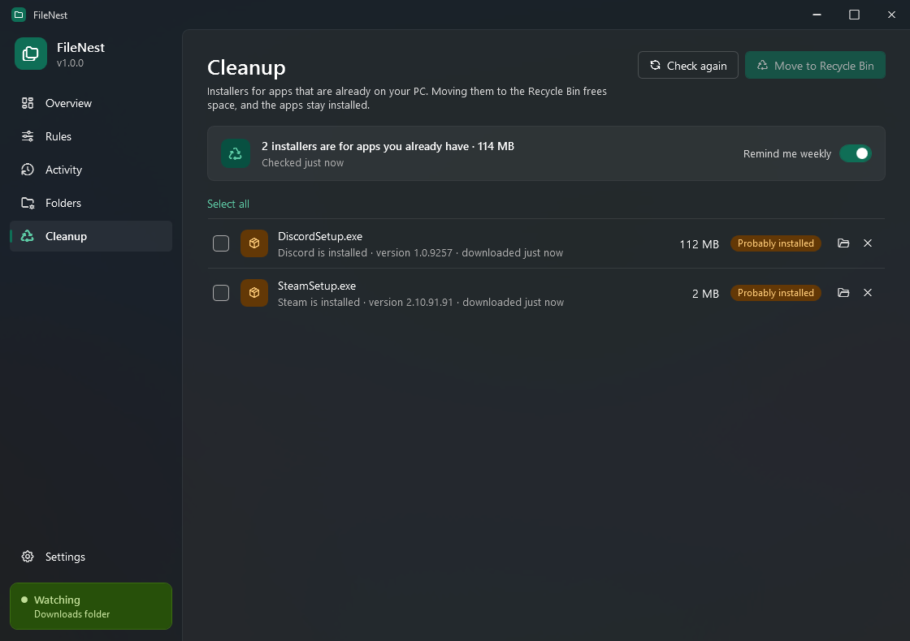
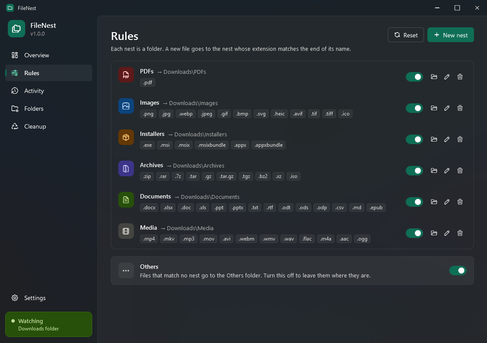
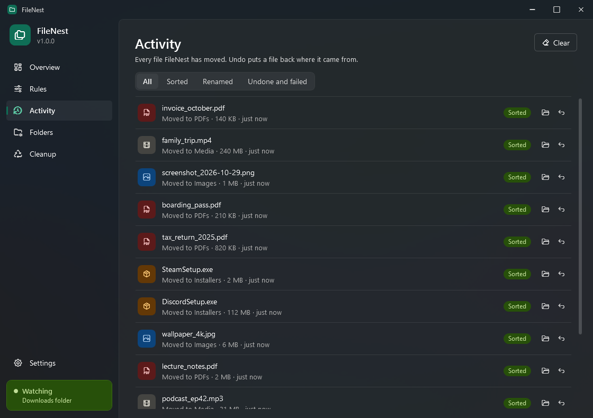

FileNest sits in the Windows tray and moves every finished download into a folder for its type. It also spots installers you no longer need.

Set it up once and forget about it. FileNest does the filing, and you can undo anything.
PDFs, images, installers, archives, documents and media each get their own folder.
Half-downloaded files are left alone until your browser is done with them.
Every move is in Activity. Nothing is overwritten: a second report.pdf becomes report (1).pdf.
Finds setup files for apps you've already installed and moves them to the Recycle Bin.
Make folders for any file types, with your choice of icon and color.
Mica or glass window, light and dark themes, seven accents, and quiet updates.
FileNest works on your PC. Your files stay where they are and are never uploaded anywhere.
FileNest only moves files between folders on your PC and never reads what's inside them. To count how many people use it, it sends a few anonymous events: no file names, no folders, nothing that identifies you. One switch in Settings turns that off. See exactly what's sent.
Every line of FileNest is public on GitHub under the GPL-3.0 license. Read it, build it yourself, or suggest improvements. Browse the code.
Three steps, and the first two happen once.
Run the installer. It sets itself up for your account and opens.
Keep using your browser like you always do. FileNest watches your Downloads folder from the tray.
Every file lands in its nest, and Organize now tidies what was already there.
Five pages, nothing to learn.


